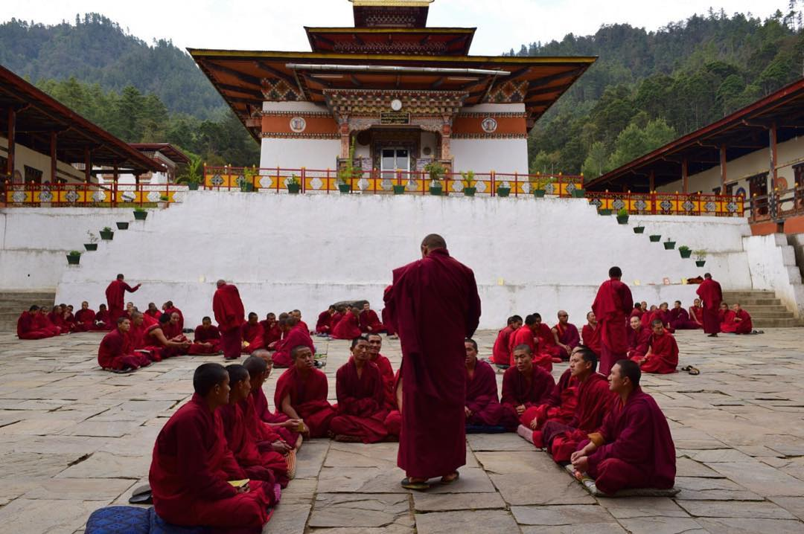

Cultura e Religião no Butão
A cultura butanesa é profundamente enraizada no budismo Mahayana. Mosteiros, estátuas religiosas e bandeiras de oração estão presentes em todas as regiões do país. Os rituais e festivais são parte importante da vida das pessoas.
O Gho (para homens) e a Kira (para mulheres) são as vestimentas tradicionais usadas no dia a dia e também em ocasiões formais. O respeito aos mais velhos, à natureza e à espiritualidade é um valor central na sociedade butanesa.
O Butão preserva sua língua oficial (dzongkha) e mantém suas tradições com orgulho, tornando a experiência turística ainda mais rica culturalmente.
